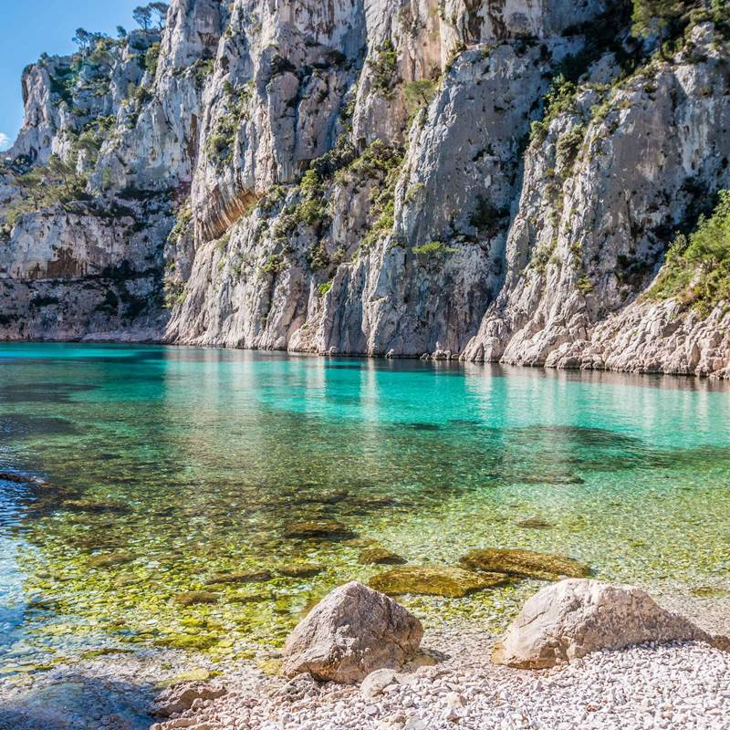
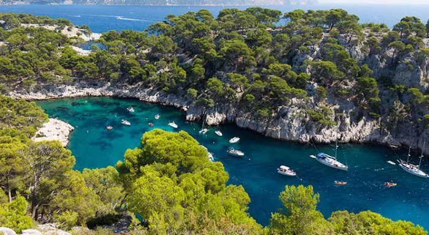
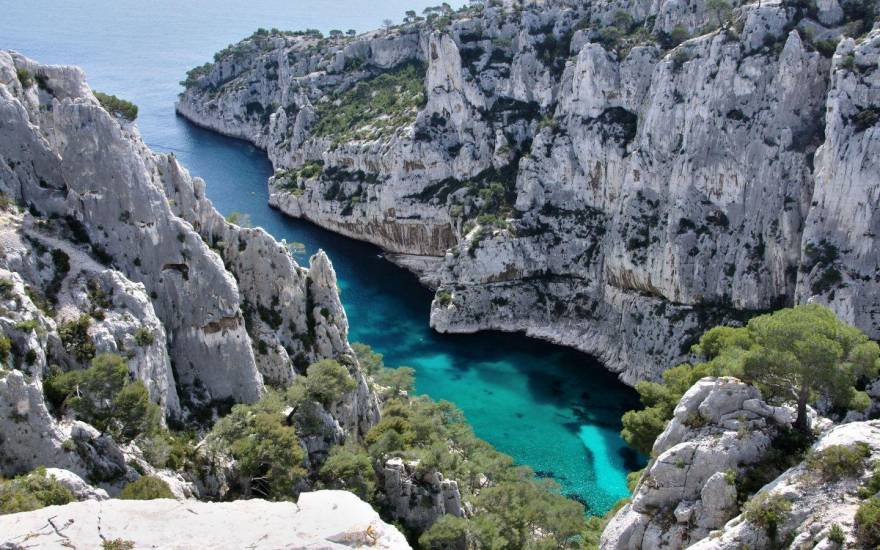
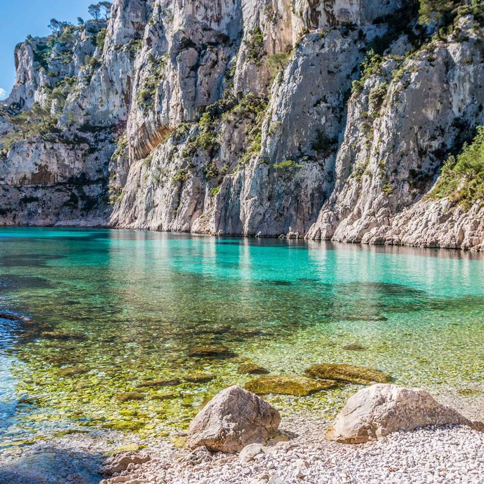
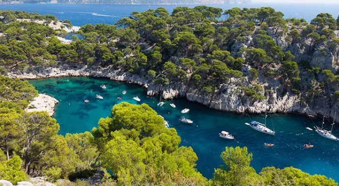
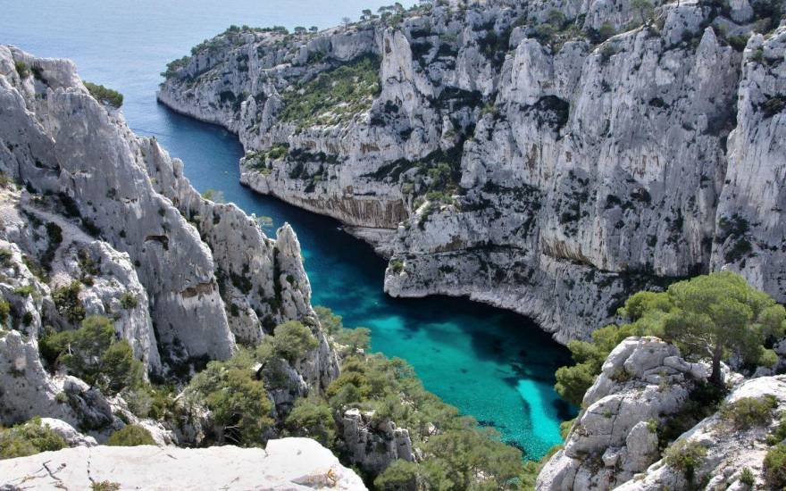
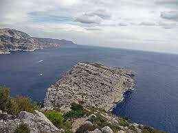
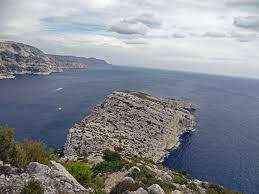
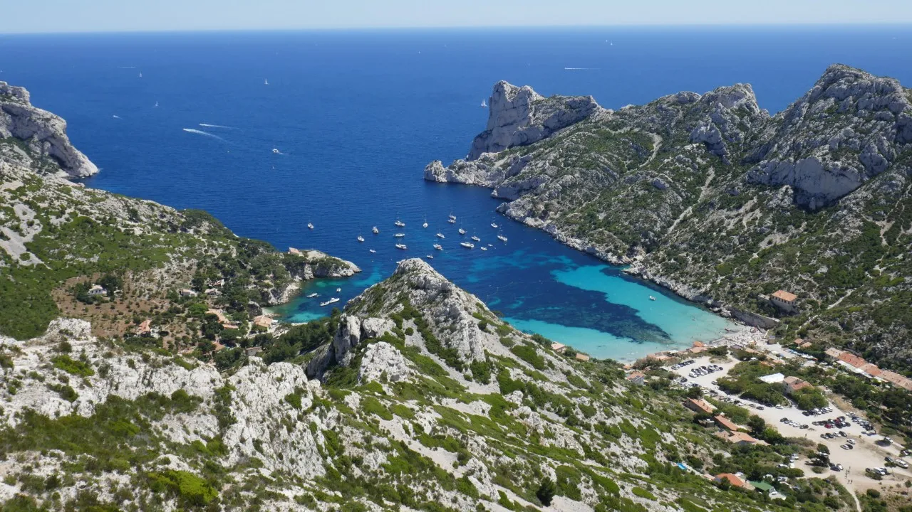
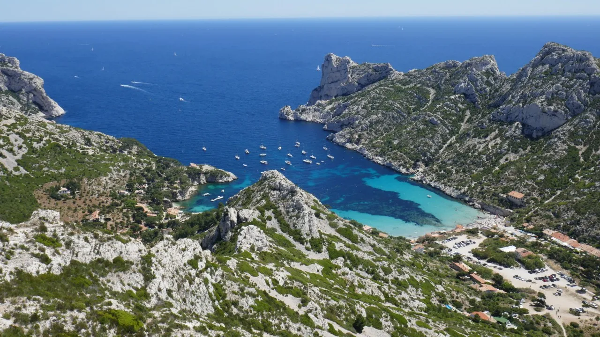

Les plus belles randonnée à Marseille
Faire une bonne randonnée à Marseille, quoi de mieux pour sortir de la ville et s’éloigner des bruits citadins ? Les environs de Marseille regorgent de superbes paysages qui ne demandent qu’à être découverts. Les randonnées autour de la citée phocéenne vous amèneront donc visiter les Calanques de Sormiou, les calanque d’En Vau, les calanques de Sugiton… Mais aussi les montagnes environnantes ou encore les petites villes aux abords. Pour vous guider dans le choix, le Magazine Sportihome vous fait un brief des 5 plus belles randonnées autour de Marseille. Préparez votre gourde, votre casquette et vos gambettes et c’est parti !


Visiter Marseille à pied : Entre le parc Borély et la Corniche
Le parc Borély est un poumon de verdure à quelques kilomètres du centre ville de Marseille. Situé à deux pas des plages du Prado, vous pourrez y découvrir un écrin de nature et de richesse historique. Au coeur du parc Borély, vous pourrez retrouver le château et ses différents jardins (anglais, français, chinois, japonais). Autant de raison pour vous permettre ce plongeon dans un autre temps. Une fois le tour de parc réalisé, la Méditerranée vous tendra ses bras. L’équipe Sportihome vous invite à déambuler sur le sable du Prado avant de continuer sur la Corniche. La Corniche vous offrira différents points de vue. D’une part sur la mer turquoise, d’une autre sur les magnifiques maisons qui la surplombent tout en apercevant la dame de la garde. Un monument incontournable de la ville. Si la balade vous séduit, vous pouvez la continuer jusqu’au Vieux Port de Marseille. Le Palais du Pharo vous offrira une toute autre vue bien plus urbaine mais toute aussi jolie sur la ville.
L’archipel du Frioul : Pomègues et Ratonneau
À quelques encâblures de Marseille sur la Méditerranée, les îles Ratonneau, Pomègues et If forment l’archipel du Frioul. Le fantôme du comte de Monte-Cristo, son plus célèbre prisonnier, se profile derrière les puissantes tours du château d’If. « Cette forteresse qui fait vivre depuis trois cents ans Marseille de ses lugubres traditions... » s’exclamait Edmond Dantès en l’apercevant. Les îles Pomègues et Ratonneau, autrefois militaires, sont liées entre elles par une digue. Depuis le port du Frioul sur l’île Ratonneau, rejoindre à l’est le cap de Croix et revenir le long de l’ancien hôpital Caroline, où les malades et autres pestiférés étaient tenus autrefois en quarantaine. Traverser la digue et continuer sur l’île Pomègues jusqu’à la tour de Pomèguet. Continuer, si bon vous semble, jusqu’au cap Caveau et revenir par le même sentier. Pique-niques agréables dans de petites criques avec vues remarquables sur Marseille.
Rando calanque à Marseille : de Callelongue à Marseilleveyre
Pour cette seconde randonnée, rendez-vous à Callelongue pour découvrir une randonnée dans le parc National des calanques de Marseille. Marseilleveyre est la deuxième des calanques de Marseille, quand on suit la côte. 45 minutes de marche depuis le port de Callelongue vous suffiront à découvrir ce coin de paradis. Cette randonnée autour de Marseille se réalise sur le sentier balisé du GR® 98, véritable balcon sur la mer. Une fois les 45 minutes passées, vous tomberez sur une jolie petite plage de sable et de galets. La plage fait partie du massif de Marseilleveyre, haut de 432 mètres. De la calanque de Marseilleveyre, un paysage unique et dépaysant s’offre à nous. Vous pourrez notamment découvrir la rade de Marseille et ses îles, où l’on observe un magnifique contraste entre la roche blanche des calanques et bleu du ciel et de la mer.
Le tour du Mont Puget
Le Mont Puget c’est le boss du boss, le sommet culminant des Calanques avec 565 m d’altitude ! Cet itinéraire au départ du Domaine de Luminy (arrêt de bus) vous mène au couloir de l’Aiguille Guillemin pour ensuite traverser les crêtes du Mont Puget. La vue au sommet vaut bien quelques passages raides : vous surplomberez la mer Méditerranée, avec une vue unique sur Marseille et les rades nord et sud de la ville.
 





Calanque d'EN VAU et de Port PIN
Au départ de Cassis nous irons à la rencontre de la plus célèbre des calanque : En Vau ! Pour y accéder nous visiterons aussi ses voisines Port Pin et Port Miou. A travers les terres et les anciens sentiers aujourd’hui abandonnés nous rejoindrons En Vau, véritable fjord du sud dont les falaises plongent dans la méditerranée. Nous longerons ensuite la côte pour profiter de points de vue plus grandioses les uns que les autres dans une ambiance toujours très méditerranéenne à l’entêtant parfum de pinède. Vous retrouverez votre guide à Cassis.
SORMIOU, MORGIOU ET SUGITON : Les incontournables
Au centre du massif des Calanques, trois perles à ne manquer sous aucun prétexte ! Une superbe boucle qui va de point de vue en point de vue en traversant des pinèdes et des crêtes dénudées, contourne des aiguilles, s’engouffre dans des vallons et termine en balcon avec de nombreux points de vues sur des lieux mythiques des Calanques : les petits ports traditionnels de Morgiou et Sormiou, les Calanques de Sugiton et des Pierres tombées et leurs îlots rocheux, le sommet de la Candelle qui domine l'ensemble et au loin l’archipel de Riou et le Cap Canaille. Une randonnée essentielle pour tout visiteur des Calanques ! Départ depuis Marseille ou vous retrouvera votre accompagnateur.
 

 

Cap Canaille, entre Cassis et la Ciotat
Rutilant de rouge au coucher du soleil, le cap Canaille, qui domine la rade de Cassis, est considéré comme l’une des plus hautes falaises d’Europe (394 m). Sa couleur rouge lui vient de ses calcaires détritiques argileux. Rejoindre le fond du parking et les crêtes qui dominent la route par un sentier en balcon en bordure du cap Canaille. La vue s’étend sur la rade de Cassis et les falaises des calanques de Port-Pin et d’En-Vau, de quoi couper le souffle ! Redescendre, puis emprunter un chemin qui remonte la zone rocheuse jusqu’à un belvédère naturel. Le sentier, toujours en balcon, évite le vallat de la Vanade et longe la bordure du plateau du cap Canaille. Suivant les dénivelés, les panoramas sur la Grande Bleue vers La Ciotat se succèdent jusqu’au sémaphore du Bec-de-l’Aigle. Revenir par le même chemin, sinon redescendre à La Ciotat et revenir en bus.